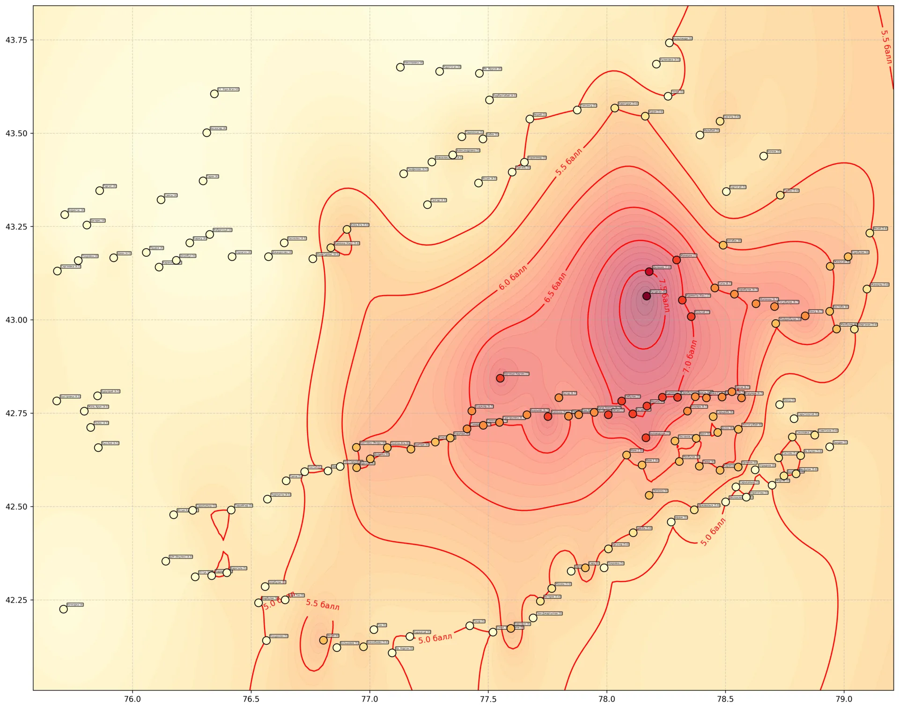
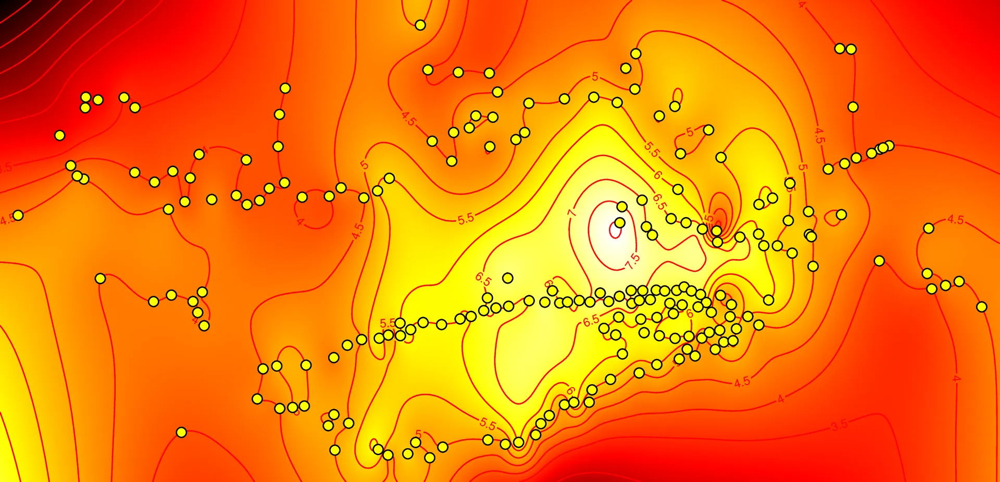
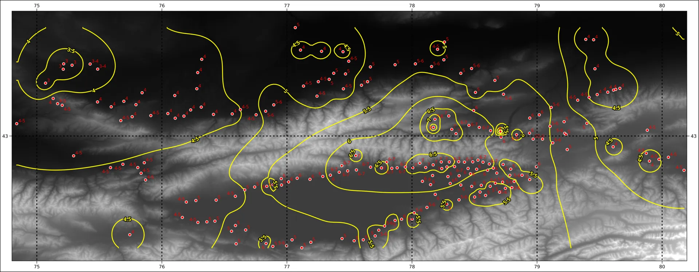
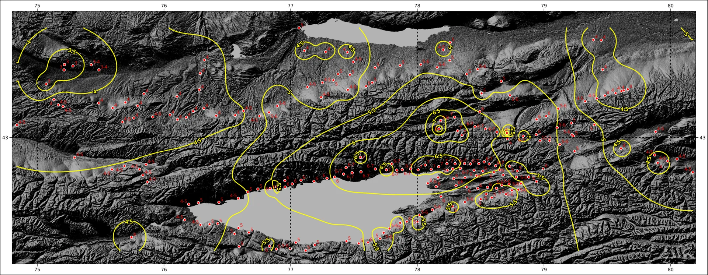
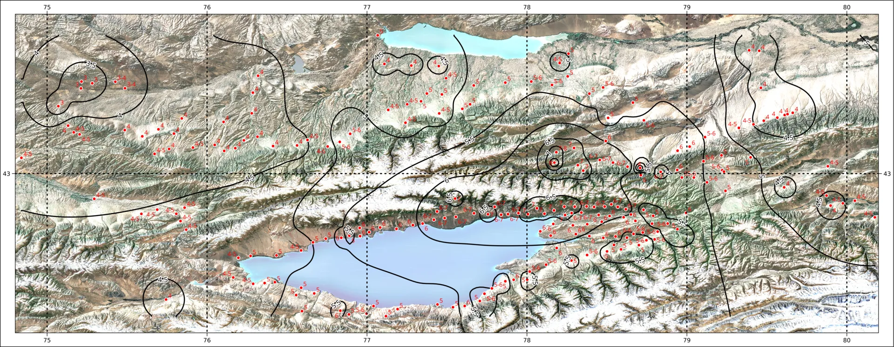
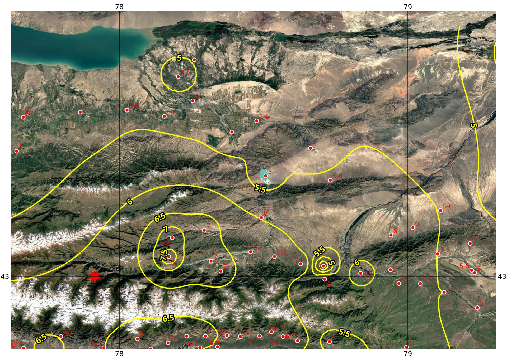
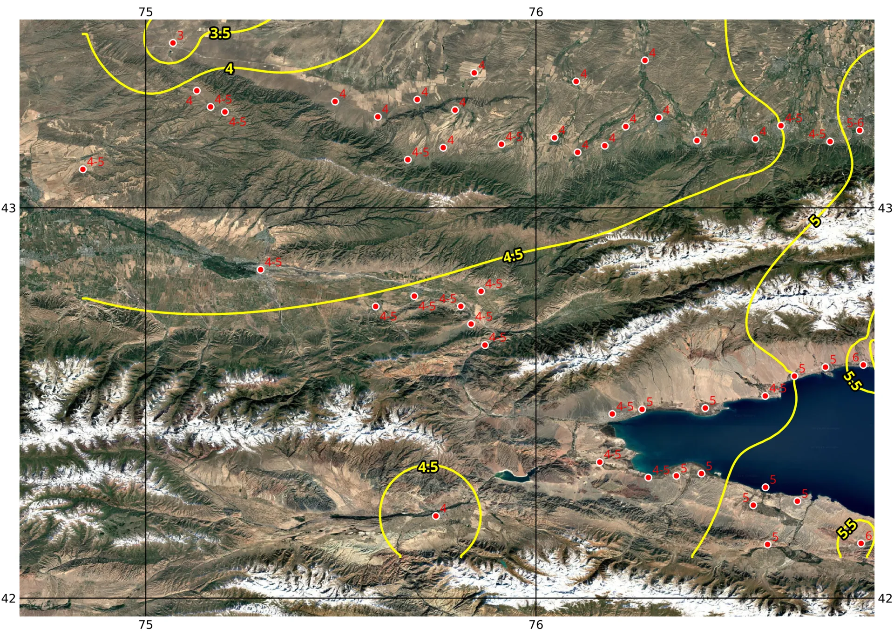
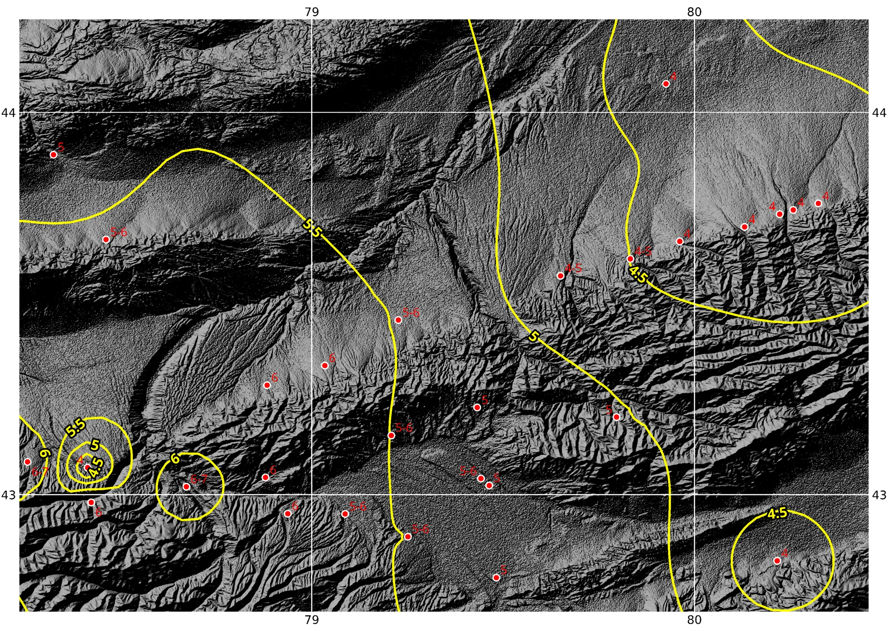
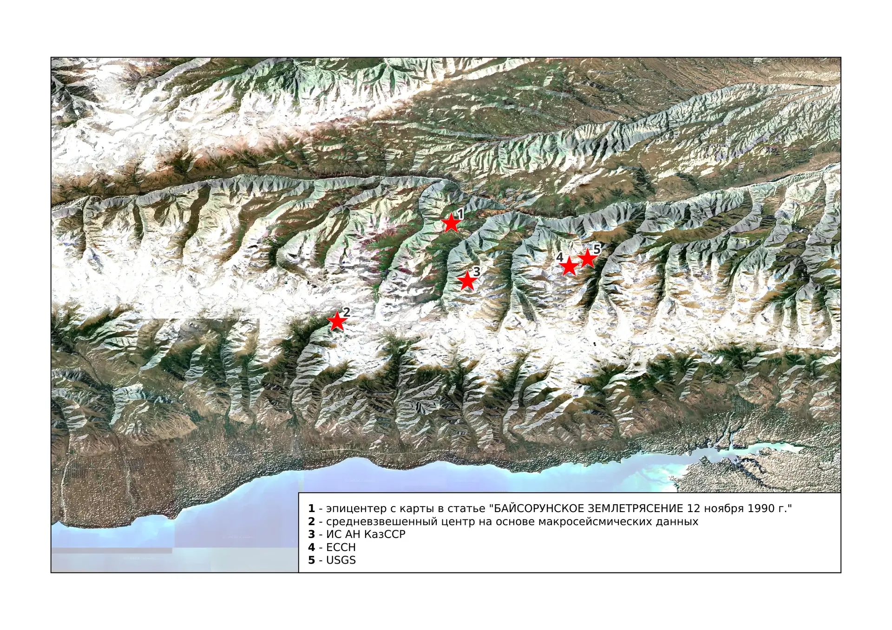
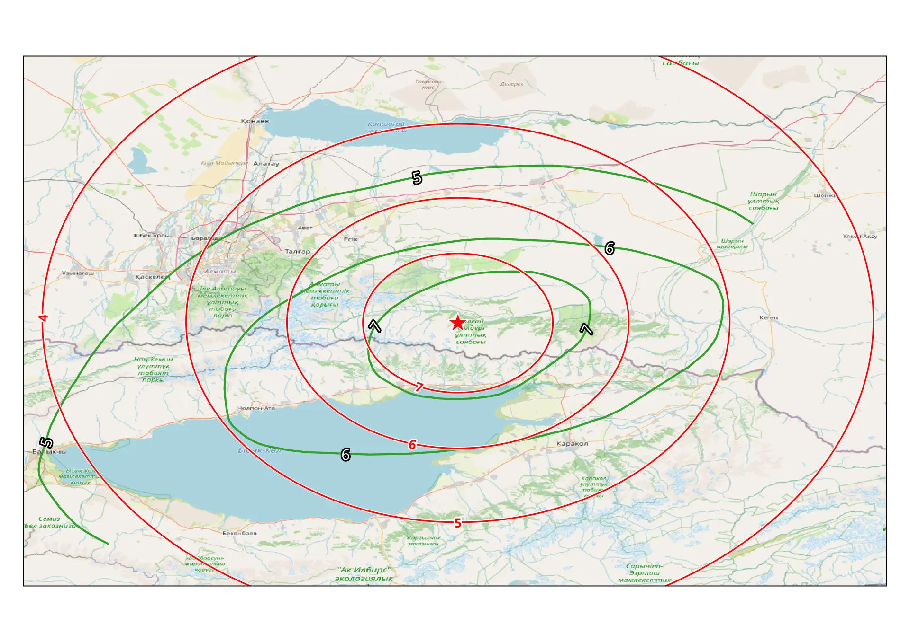

Данные
карты построены на основе макросейсмических данных.
SciPy радиально базисные
функции (RBF)

PyGMT
библиотека геодезического и картографического пакета GMT

QGIS,
SRTM рельеф одноканальный серый (для расчетов не использовался),
интерполяция обратно взвешенные расстояния.

QGIS,
SRTM теневой рельеф (для расчетов не использовался), интерполяция
обратно взвешенные расстояния.

QGIS,
SRTM теневой рельеф (для расчетов не использовался), google спутник,
интерполяция обратно взвешенные расстояния.

На
карте прослеживается корреляция между изосейстами и элементами
рельефа.



Средневзвешенный
эпицентр №2 получен на основании макросейсмических данных.

Изосейсты
построены на основе формулы Н.В. Шебалина.
которое
было преобрзовано в данное уравнение для получения радиусов изосест
где
r — расстояние по поверхности земли
I —
интенсивность на поверхности
h — глубина очага
b
— коэффициент магнитуды
c — свободный член
n —
коэффициент затухания (коэффициент Блэйка)
из статьи “Байсорунское землетрясение 12 ноября 1990 г.” были
получены
координаты эпицентра с карты - долгота 77.91489985, широта
42.99962764
M магнитуда 6.2
h глубина 30.0
n
()
коэффициента затухания 5.0
из книги “Новый каталог сильных землетрясений на территории СССР с
древнейших времен до 1975 г” были взяты (стр 24) b=1.5, v=3.5, c=3.0
Скорректированные
коэффициенты для сходимости уравнения Шебалина
MAG_COEF 1.5
ATTEN_COEF 5.8
OFFSET_CONST 6.5
